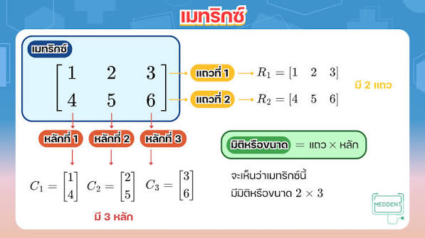

เมทริกซ์

กลุ่มของจำนวนหรือสมาชิกที่นำมาจัดเรียงกันเป็นรูปสี่เหลี่ยมผืนผ้าหรือสี่เหลี่ยมจัตุรัส โดยเรียงเป็นแถวในแนวนอน (Row) และเรียงเป็นหลักหรือคอลัมน์ในแนวตั้ง (Column) และมักจะเขียนเครื่องหมายวงเล็บคร่อม หรือ ( ) ไว้รอบกลุ่มจำนวนนั้น

กลุ่มของจำนวนหรือสมาชิกที่นำมาจัดเรียงกันเป็นรูปสี่เหลี่ยมผืนผ้าหรือสี่เหลี่ยมจัตุรัส โดยเรียงเป็นแถวในแนวนอน (Row) และเรียงเป็นหลักหรือคอลัมน์ในแนวตั้ง (Column) และมักจะเขียนเครื่องหมายวงเล็บคร่อม หรือ ( ) ไว้รอบกลุ่มจำนวนนั้น